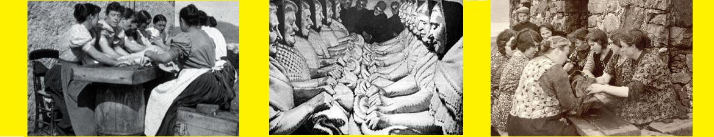
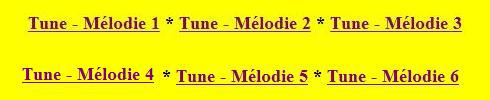
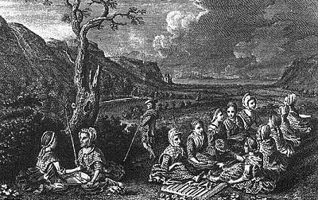

A Mhorag: Oran luaidh no fucaidh
O Morag: Chant de foulage ou de feutrage
Le Alasdair Mac Mhaighstir Alasdair
by/par Alexander McDonald
Sources: 1° Lachlan McBean (1853-1931), "Songs and Hymns of the Scottish Highlands" published in 1888,2° "Eachdraidh a Phrionnsa na Bliadhna Thearlaich" edited by John McKenzie (1806-1848) -Text in italics- .


Sources:
1. "The Literature, Poetry and Music of the Highland Clans", Donald Campbellburgh. (Appendix p.3), 1863
2. Site "Tobar an Dualchais": Song "Agus Hò Mhòrag": www.tobarandualchais.co.uk/fullrecord/60270/1
3. Idem: Song "Mhòrag 's na hò ro Gheallaidh": www.tobarandualchais.co.uk/fullrecord/55692/1
4. Idem: Song "Mhòrag 's na hò ro Gheallaidh": www.tobarandualchais.co.uk/fullrecord/40459/1
5. Idem: Song "Agus Hò Mhòrag": www.tobarandualchais.co.uk/fullrecord/40210/1
6. Idem: Song "Agus Hò Mhòrag": www.tobarandualchais.co.uk/fullrecord/42369/1
Tunes sequenced by Christian Souchon
Tune - Mélodie 4
Sung by Rev. William Matheson, recorded by James Ross in May 1954About the tunes - A propos des mélodies
|
The tune used to this song was a
Gaelic "Oran luaidh no Fucaidh " ('Waulking or Fulling song') from the Outer Hebrides
and refers to the milling, or fulling, of a tweed web called the 'fauld'. It was meant to accompany work, the rhythms corresponding to the pace of the work to be done. The most recent form was processed as follows: A group of women sat around a long table on which the tweed was laid. They kneaded the material rhythmically against the surface, passing it down the line. The thumping of the cloth en the table provides a regular beat for the song. In former times, the freshly woollen cloth was pouded in urine to bring up the nap.
The Oran Luadh usually consists of a solo singer singing a verse of the song -usually a line or a couplet- and the rest of the group answering with a refrain. The refrain may be a single answering line or several lines and may consist of onomatopeia instead of words. Its strong rythm makes this type of music easily notable. It was the poetess Màiri nighean Alastair Ruaidh (Mary daughter of Alexander the Red) who brought this tradition to the court of the McLeods of Berneray c. 1650. Alexander McDonald was the first man to make of it an instrument of propaganda: The woman at he head of the table who gave out the melodic line was Prince Charles, referred to by his code-name "Morag", the waulking women were his soldiers, the cloth which they were pounding was the British Red-coats, and the urine was blood and gore. He wrote two songs following this pattern: the present "Oran Luaidh no Fùcaidh" and "Clo MhicilleMhicheil" (Carmichael's Cloth) . The present song is a typical instance of this peculiar singing technique. Tunes 2 with 4 are sung either to Alexander McDonald's poem or to similar lyrics with cryptic Jacobite import (Morag=Prince Charles). Mr DAVID FERGUSON sent additional information as follows: "I was born on Cape Breton Island, Nova Scotia, which as you may know was settled largely by Gaelic-speaking Highlanders from the west of Scotland, and so many of the songs were familiar to me. Regarding "waulking", on Cape Breton a "waulking" was known as a "milling frolic" , a kind of party at which friends and neighbours would gather to help with the work. There may be more than you ever wanted to know about milling at http://www.ancliathclis.ca/, site of An Cliath Clis ("the nimble hurdle," meaning the sawhorses or forms (hurdles) on which a door would be laid to serve as a surface for the nimble or skilful work)." Here is a sample of sung "Oran luadh": Cape Breton artist Betty Lord singing "clo Mhic Ille Micheil" (lyrics on this page ). Four other Cape Breton Waulking songs may be heard starting from page Ille Dhuin . Other classes of working songs exist in Gaelic music: rowing songs , milling songs, spinning songs, churning songs and milking songs. |
La mélodie sur laquelle est écrit ce texte est celle d'un
chant gaélique des Hébrides Extérieures dit " Oran Luaidh no Fucaidh" ("Chant de foulage ou feutrage")
et a trait au foulage ou feutage d'un tissu appelé "fauld". Il était destiné à accompagner le travail, son rythme étant celui de l'opération à accomplir. La forme la plus récente de ce procédé était la suivante: un groupe de femmes assises autour d'une longue table sur laquelle était étendue la pièce de tweed. Elle pétrissaient le tissu en le projetant contre la table en direction de leurs voisines. Le bruit du tissu projeté sur la table marquait le rythme du chant. Autrefois le tissu de laine fraîchement tissé était foulé dans l'urine pour obtenir le feutrage.
L'Oran Luaidh se compose habituellement d'un couplet interprété par un soliste - une ligne ou une strophe - et d'un refrain repris en chœur par tout le groupe. Le refrain peut se limiter à une ligne en réponse ou être plus long. Il peut consister en onomatopées au lieu de mots intelligibles. Cette musique est facilement reconnaissable à son rythme fortement marqué. Ce fut la poétesse Màiri nighean Alastair Ruaidh (Marie, fille d'Alexandre le Roux) qui introduisit cette tradition à la cour des McLeods de Berneray vers 1650. Alexandre McDonald fut le premier homme à en faire un instrument de propagande: la femme du bout de la table chargée de fournir la ligne mélodique était le Prince Charles, sésigné sous son nom de code "Morag" (Marion); les fouleuses étaient ses soldats, le drap qu'ils étaient en train de frapper, c'était l'ennemi à l'uniforme rouge et l'urine à foulon, c'était le sang frais ou coagulé. Il composa deux chants selon ce principe: le présent"Oran Luaidh no Fùcaidh" et "Clo MhicilleMhicheil" (Carmichael's Cloth) . Le présent chant est un exemple typique de cette technique de chant. Les mélodies 2 à 4 accompagnent soit le poème d'Alexandre McDonald, soit tes paroles similaires ayant toutes un double sens Jacobite (Morag=Prince Charles). M. DAVID FERGUSON a communiqué les informations complémentaires qui suivent: "Je suis né à Cap Breton, Nouvelle Ecosse, qui comme on le sait a été largement peuplé de Highlanders celtophones venant de l'ouest de l'Ecosse. Bien des chants du site sont pour moi de vieilles connaissances. A propos du "foulage", on notera qu'à Cap Breton un "waulking" ou "milling frolic" ( fête entre artisans), était une soirée entre amis et voisins qui se réunissaient chez l'un d'eux pour l'aider dans son ouvrage. On trouve des tas de renseignements à ce sujet à l'adresse http://www.ancliathclis.ca/, site de An Cliath Clis ("la claie agile") qui désigne le chevalet ou les tréteaux (claies) sur lesquels on posait une porte pour servir de surface d'appui pour cette délicate opération)." Voici un échantillon d'"Oran luadh" chanté par l'artiste du Cap Breton, Betty Lord, "clo Mhic Ille Micheil" (dont le texte est sur cette page ). On peut entendre quatre autres chants de foulage du Cap Breton à partir de la page Ille Dhuin . Il existe d'autres catégories de chants de travail dans la musique gaélique: les chants de rameurs , les chants de scieurs, de fileuses, de barattage et de traite. |

|
MORAG [1] - A WAULKING SONG [2]
Composed by a gentleman to his sweetheart, after she had gone over the water. To the air: Then horo, Morag, horo, the lovely lady, Then horo, Morag 1. O Morag with the tresses flowing, I will praise thee with devotion! 2. Far too soon has been thy going; Soon come back across the ocean! 3. Bring a band of maids [3] for spreading And for dressing cloth of scarlet! 4. Thou shalt not go to the steadying, Lest the dirt should soil thy raiment. 5. Nor would I let thee go herding. Leave vile work to loon and varlet. 6. Oh, my Morag is the sweetest, With her lovely locks in cluster. 7. Coiled and curled in folds the sweetest, Gleaming bright with golden lustre; 8. Glowing ringlets, golden gleaming, Dazzle nobles who behold her; 9. Yellow tresses round her streaming, Fall in cascades on her shoulder. 10. Thy twisting, golden [4], priceless tresses Around thy ear in clustering ringlets. 11. O Morag! thy hair in curls a-flowing Is to me a peaceful tempting. 12. And though I'll not seek to wed thee, To be beside thee were my pleasure. 13. And should I e'er again embrace thee, Death alone, my love, shall part us. 14. I will follow thee as closely As to sea-rock clings the limpet. 15. Through lands I knew I've gone far with thee, And many a mile through lands unknown. [5] 16. I would follow thee to the world's end If only, love, thou camest to ask me. 17. Thy love has sent me mad with passion, Keen and light the thrill runs through me. 18. O Morag of the cheeks so lovely Clear is the curving of thy eyebrow. 19. Cheerful, gentle, soft thy glance is, Playful, steady and beguiling. 20. Chalk-white, well-set, are the maiden's Teeth, carved like the chiselled die. 21. The lovely maiden of the smooth hands, Like the swan's down in their softness. 22. Beautiful budding breasts adorn her, And her breath has the musk's fragrance. 23. Thou art loved by many a young man Between the Isle of Man and Orkney. 24. Many a lover has my lady In the mainland and the Islands; 25. Many a man with sword and plaidie She could summon from the Highlands, 26. Who would face the cannon's thunder Armed and for her honour plighted, 27. Driving hostile bands asunder Bound to see our lady righted. 28. There's many a valiant, daring hero In Edinburgh, well I know it, 29. If they saw thy state of fortune, Would befriend thee in thy quarrel. 30. My hero would not fail thee, Thy own Captain, young Clanranald, 31. He joined thee before all others, [6] And will again, if thou comest. 32. Every man in Uist and Moidart And dark-green Arisaig of birchwoods. 33. In Canna, Eig and in Morar, The noble regiment of Clanranald! 34. In time of Alasdair [7] and Montrose They were to foreigners a terror! 35. It was felt at Inverlochy [8] Who with swords could smite the harder. 36. At Perth [9], Kilsyth and at Auldearn They left the rebels lying lifeless! 37. Great Alexander of Glencoe [10] And the fierce band from Glengarry. 38. Likewise would Sleat [11] come and join thee, Though he is but yet a stripling. 39. And from the Route would come brave Antrim [12] Of the slim steeds, to rise for thee. 40. All the Gaels would gather to thee, Whoever rose with thee or tarried. 41. Ten thousand [13] of them sat a-waulking In the first King Charles's battles. 42. Many the cloth they gave a nap to Between Sutherland and Annan. 43. When others had refused to waulk it They themselves the band assembled. 44. Certes, but our maids are clever When thet get their weapons ready, 45. Many a web they've sorted ever Firmly handled close and steady, 46. Thick and close and firm [14] in pressing, Bloody red, a dye un fading; 47. Come then with thy maids for dressing, We are ready here for aiding. Then horo, Morag, horo, the lovely lady, Then horo, Morag Translated by Lachlan McBean in "Songs and Hymns of the Scottish Highlands", except the stanzas in italics that are taken from "Highland Songs of the '45" edited by John Lorne Campbell |
MORAG - ORAN LUAIDH NO FUCAIDH
A rinn duine uasal d'a leannan, air dhith dol thar fairge. Air fonn: Agus O Mhorag, horo 's na horo gheallaidh Agus o Mhorag! 1. A Mhorag chiatach a chuil dualaich 'Se do luaidh a tha air m'aire! 2. 'S ma dh'imich thu null thar chauan auinn Gu ma luath a thig thu thairis. 3. 'S cuimhnich, thoir leat bannal ghruagach A luaidheas an clo ruadh gu daingeann. 4. O cha leiginn thu do'n bluailidh Ma salaich am buachar t-anart. 5. De cha leiginn thu gu cualach Obair thruaillidh sin man caileag. 6. Gur h'i Morag ghrinn mo ghuamag Aig am beil cuailein barr-fhionn. 7. 'S gaganach, bachlagach, cuachach Ciabhag na gruagaich glaine, 8. Do chùl peueach slos'na dhualaibh Dhalladh e naislean le lainnir, 9. Sios 'na fheoirneinean mu'd ghuailnean, Leadan cuaicheineach na h-ainnir. 10. Do chùl peurlach, òr-bhui, luachach, Timchioll do chluasan 'na chlannaibh. 11. A, Mhòrag ! gu'm beil do chuailean Ormsa na bhuaireadh gun sgainnir. 12.'S ge nach iarr mi thu ri d' phùsadh, Gu'm b' e mo rùn a bhi mar ruit. 13. 'S ma thig thu rìthist am lùbaibh, 'S e 'n t-eug a rùin ni ar sgaradh. 14. Leanaidh ma cho dlù ri d' shàilean, Sa ni bairneach ri sgeir mhara. 15. Shiubhail mi cian leat air m' eòlas, Agus spailp do'n stroichd tbar m' ain-eol. 16. Gu leanainn thu feadh an t-saoghail, Ach thusa ghaoil theachd am fharraid. 17. Gu'n chuireadh air rnhisg le d' ghaol mi ; 'S mear aotrom a ghaoir ta m' bhallaibh. 18. 'S a Mhòrag ga'm beil a ghruaidh chiatach ; 'S glan a fiaradh thar do mhala. 19. Do shùil shuilbhear, shochdrach, mhòdhar, Mhireagacb, chòmhnart, 's i meallach. 20. Deud cailce, shasda, na rìbhinn, Snaite mar dhìsn' air a' ghearradh. 21. Maighdean bhòidheach, nam bos caoine, 'S ìad cho maoth ri cloidh na h-eala. 22. Cìochan leuganach nan gucag, 'S fàileadh a mhusca d'a h-anail. 23. 'S ioma òigear a ghabh tlachd dhiot, Eadar Arcamh agus Manuinn. 24. 'S iomadh leannan a th' aig Morag Endar Mor-thir agus Arrainn. 25. 'S iomadh gaisgeach deas de Ghaidheal Nach obadh le m' ghradh-sa tarruing, 26. A rachadh le sgiathan 's le clàidhean Air bheag agath gu bial nan canan, 27. Chunnartaicheadh dol an ordugh Thoirt do chorach mach a dh'aindeoin. 28. 'S iomadh àrmunn làsdail, treubhach, Ann an Dunèideann, am barail, 29. Na faiceadh iad gnè do dhuais ort, Dheanadh tarrainn suas ri d' charraid. 30. Mo chinnt' gun dheanadh leat èridh, Do Chaiptin fein Mac-Tc-Ailein : 31. Gu'n theann e roi' ro chàch riut, 'S ni e fàst e, ach thig thairis : 32. Gach duine, tha 'n Uibhist a Mùideart, 'S an Arasaig dhù-ghorm a bharraich ; 33. An Cana, an Eige, 's am Moror ; Reiseamaid chorr ud shiol Ailein ! 34. 'N am Alasdair,* is Mhontròis', Gu 'm ba bhòchdain iad air Ghallaibli. 35. Gun d' fhairich là Inbher-Lòchai, Co bu stròicich ann le lannaibh. 36. Am Peairt, an Chill-Saoidh, 'san Allt-èireann, Dh' fhag iad reubalaich gun anam, 37. Alasdair mor Ghlinne-Comhann, 'S bragaid coimheach Ghlinne-garadh. 38. Mar sin is an t-àrmunn Slèibhteach, Ge d' a tha e-fèin 'na leanamh. 39. Dh'èiridh leat a nall o'n Rùdha, Anntrum lù-chleasach nan seang-each. 40. Dhruideadh, na Gàè'il gu lèir riut, Ge b' e dh'èiridh leat no dh'fhanadh. 41. Shuath, deich mìle dlùu air clè-dhuibh, An cogadh Rìgh Sèurlas nach maireann. 42. 'S ioma clò air 'n tug iad caitean, Eadar Cat-taobh, agus Anuinn. 43. Bha càch 'diulta' teachd a luagh dhuibh, 'S chruinnich iad-san sluagh am pannail, 44. A Righ! bu mhath 's an luath-laimh iad Nuair a thàirneadh iad an lannan. 45. H-uile cloth aluaidh iad riamh duibh Dh' fhag iad e gu ciatach dain geann. 46. Teann, tingh, daingeann, fighte, luaidhte Daite ruadh air thuar na fala, 47. Greas thairis le d'mhuathan luadhaidh 'S theid na gruagaichean so mar-rint. Agus ho Mhorag, horo 's na horo gheallaidh. Agus o Mhorag! Note: The stanzas in italics are taken from "Eachdraidh a Phrionnsa na Bliadhna Thearlaich" edited by John McKenzie (1806-1848) |
MORAG [1] - CHANT DE FOULAGE [2]
Composé par un gentilhomme pour sa belle, après que celle-ci eut traversé la mer. Sur l'air de: Tra lala, Morag, lala, la belle dame, Tra lala, Morag! 1. Morag, ta belle chevelure Vaut bien que l'on te fasse un chant. 2. Trop tôt finies tes aventures T'ont fait repasser l'océan. 3. Viens donc avec tes lavandières [3] Préparer de nouveaux atours. 4. Et que les tâches ancillaires Qui salissent les vêtements, 5. Ou que l'on réserve aux bergères Te soient épargnées pour toujours. 6. O Morag, c'est toi la plus belle Avec tes longs cheveux cuivrés 7. Lesquels ondulent et déroulent De merveilleux reflets dorés. 8. Mèches blondes et chatoyantes Ont séduit maint noble seigneur; 9. Cette cascade débordante Sur ta nuque a gagné leurs cœurs. 10. Les pampres précieux de tes boucles D'or [4] dont ton oreille est parée, 11. O Morag, sont des flots qui coulent Paisiblement pour me tenter. 12. L'hymen n'est point ce que je vise. Je ne veux qu'être près de toi. 13. Qui, sinon la mort, nous divise Quand je te tiendrai dans mes bras? 14. Oui, car je m'attache à ta trace Comme la patelle au rocher, 15. Dans des pays de connaissance Tout comme aux pays étrangers, [5] 16. Combien de chemin à ta suite Ai-je fait, quand tu l'exigeais! 17. Et j'irais, suivant ton invite. Au bout du monde, oui, j'irais! 18. O ma Morag aux joues de roses Qu'il est net l'arc de tes sourcils! 19. Ton doux regard où qu'il se pose Ensorcelle et, quand tu souris, 20. Tu montres de belles dents blanches Qu'on dirait diamants ciselés. 21. Et la charmante a les mains douces: Le duvet du cygne l'est moins. 22. Fragrance de musc est sa bouche; Un bouton de rose son sein. 23. De l'Île de Man aux Orcades, Elle a de nombreux soupirants. 24. Plus d'un, amoureux de la dame Sur les iles, le continent, 25. Lui vouerait son plaid et sa lame, Pour la servir, dans les Highlands. 26. Face au canon et son tonnerre, Leurs armes sont l'honneur, la foi 27. Ils disperseraient l'adversaire. On verrait triompher le droit. 28. Plus d'un preux pour servir ta cause A Edimbourg, je le crois bien, 29. S'il savait comme vont les choses Viendrait lier son sort au tien. 30. J'en sais un qui, pour rien au monde N'y manquerait, c'est Clanranald. 31. Il fut premier à te rejoindre [6] Et il n'attend que ton signal. 32. Tous ceux d'Uist et de Moidart Viendraient; ceux du vert Arisaig, 33. De Canna, d'Eig ou de Morar: Les Clanranald au grand complet. 34. Du temps d'Alasdair [7], de Montrose Ils semaient l'effroi chez les "Galls". 35. Inverlochy [8] en fit la preuve: C'est leurs coups qui font le plus mal! 36. A Perth [9], à Kilsyth et Auldearn, Les rebelles gisaient sans vie! 37. De Glencoe le grand Alexandre [10] Conduirait ceux de Glengarry. 38. Le Chef de Sleat [11], bien qu'il soit jeune Te rejoindrait sans hésiter. 39. Les fougueux étalons d'Antrim [12] Pour toi quitteraient leur Chaussée. 40. Tous les Gaëls des Hautes Terres Qu'ils t'aient, jadis, ou non, aidé. 41. Ils étaient dix mille naguère [13] A soutenir Charles Premier. 42. Des aunes de toile ils foulèrent Entre Sutherland et Annan. 43. Et si d'autres y répugnèrent, Eux, ils ont occupé le banc. 44. Nos filles, ma foi, sont agiles A préparer leur armement, 45. Et déjà sont choisies les toiles Drues, les tissus bien résistants, [14] 46. Epais et qu'en vain l'on oppresse; De sang rouge à jamais teintés! 47. Viens avec tes servantes prestes A qui notre aide est assurée! Tra lala, Morag, lala, la belle dame, Tra lala, Morag! (Trad. Ch.Souchon (c) 2009) A partir de la traduction anglaise de Lachlan McBean dans "Chants et cantiques des Highlands", sauf les strophes en italiques qui ne figurent que dans les "Chants des Highlands de 1745" compilés et traduits par John Lorne Campbell |
|
[1] This is a disguised Jacobite song as 'Morag' ('Marion' or 'Sarah)represents Bonnie Prince Charlie who, according to John McKenzie in "Eachdraidh a'Phrionna no Bliadhna Theàrlaich" (1844), acquired this nickname during the period of his wandering disguised as "Betty Burke" (see the song
"Twa Bonnie Lass")
[2] For details about the "Waulking songs", cf. Oran nam Fineachan Gaidhealach [3] The "Maidens" are French soldiers to beat the Red coats. [4] The Prince had a red hair. [5] Here the poet alludes, for once, to his own participation in the rising. [6] Ranald McDonald, younger of Clanranald, was one of the first chieftains to join the Prince (cf. "An Fhideag Airgid" ). [7] Alasdair McColla Chiotaich, Montrose 's second in command. [8] cf. "Battle of Falkirk", note 4. [9] i.e. Tippermuir, Montrose's first victory, 1st September 1644. [10] Alexander McDonald, XIVth Chief of Glencoe. [11] Sir James McDonald of Sleat, who died in Rome in 1766, aged 25. His father was a Hanoverian. [12] The McDonalds of Antrim did not take part in the '45, but it was the Earl of Antrim who sent Alasdair McColla with his army to help Montrose in 1644, which is probably McDonald's reason for mentioning his descendant. [13] Actually Montrose never had more than 5000 men, and often far fewer. [14] The object in waulking cloth is to render the texture firm and even. The notes above are taken from John Lorne Campbell's "Highland Songs of the '45" (1932). |
[1] Ceci est un chant Jacobite déguisé car "Morag" ('Marion' ou 'Sarah') y désigne le Prince Charles. Selon John McKenzie dans "Eachdraidh a'Phrionna no Bliadhna Theàrlaich" (1844), il devrait ce surnom à son déguisement féminin à un certain moment de son errance (cf. le chant
"Twa Bonnie Lass")
[2] Pour plus de détails sur les chants de foulage, cf. Oran nam Fineachan Gaidhealach [3] Les "servantes" en question sont des soldats français appelés à battre les Habits rouges. [4] Le Prince avait les cheveux roux. [5] C'est ici la seule fois que le poète évoque sa participation au soulèvement de 1745. [6] Ranald McDonald, cadet de Clanranald fut l'un des premiers chefs locaux à se joindre au Prince. (cf. "An Fhideag Airgid" ). [7] Alasdair McColla Chiotaich, commandant en second de Montrose . [8] cf. "la bataille de Falkirk, note 4. [9] i.e. Tippermuir, première victoire de Montrose, 1. septembre 1644. [10] Alexander McDonald, XIVth Chef des McDonald de Glencoe. [11] Sir James McDonald of Sleat, qui mourut à Rome en 1776, à l'âge de 25 ans. Son père était un Hanovrien. [12] Les McDonald d'Antrim ne prirent aucune part aux événements de 1745. Mais ce fut le Comte d'Antrim qui envoya Alasdair McColla et son armée soutenir Montrose en 1644. C'est probablement la raison pour laquelle McDonald fait état de son descendant. [13] En réalité Montrose ne disposa jamais de plus de 5000 hommes et souvent bien moins. [14] L'objet du foulage d'un tissu était d'en rendre la texture à la fois ferme et lisse. Les notes ci-dessus sont tirées des "Highland Songs of the '45" de John Lorne Campbell (1932). |
|
Here is the "pre-McDonald" version of the song:
O MARY, FAIR LASS! Chorus: Agus O Mhorag, horo 's na horo gheallaidh Agus o Mhorag! O little Mary of the lovely locks, I would buy you a comb. O little Mary of the curled tresses, I often think of you with affection. I am out sailing on the great ship With no way to return home. Do you remember the night we were On board the white sailed ship on the surface of the sea. That was the night we were driven off course By the sea that rose in billows. It's a pity that I wasn't In the coffin of narrow boards, Since I saw the candles blazing At your wedding banquet. When you went on the hunt, Heavy your procession from the village. With your slender barrelled gun, Powder, attendant and bounding dog. You would kill the rutting brown stag, Leaving him breathless and choked on his blood. I would not permit you to go to the sheep pen For fear you would soil you clothing. I would not permit you to go to the goat pen, Or to milk the cows at springtime. I am on the backside of the high mountains. My mother can't hear my complaint. O Little Mary, daughter of the McLeod Chief for whom I would spill blood. O little Mary from the land of the McLeods, I would drink your toast notwithstanding. |
A MHORAG 'S NA HORO GHEALLAIDH Curfa: Agus O Mhorag, horo 's na horo gheallaidh Agus o Mhorag! A Mhòrag bheag a' chùil riomhaich, Dheanainn-sa do chìr a cheannach. A Mhòrag bheag a' chùil dualaich, 'S tric do luaidh a' tighinn air m'aire. Mis' amuigh air luing a' seòladh, 'S mi gun dòigh air tighinn gu baile. An cuimhne leat an oidhch' a bha sinn, 'S a' luing bhàin air bhàrr na mara. An oidhche sin a chaidh ar fuadach, Thànaig a' mhuir mhór 'na gleannaibh. 'S truagh a Righ nach ann a bha mi, 'N ciste-laigh nam bòrdan tana. Bhon a chunna mi na coinnlean, A' gabhail araoir air do bhanais. Nuair dheidheadh tu amach a dh'fhia'chadh, Bu throm do thriall bhon a' bhaile. Le d'ghunna leathann 's le d'fhùdar, Le do ghille 's cù 'na dheannamh. Leagadh tu 'n damh donn a' bhùirein, 'S fhuil 'ga thùcadh 's e gun anail. Cha leiginn thu chrò nan caorach, Air eagal d'aodach a shalach. Cha leiginn thu chrò nan gobhar, No bhleoghainn a' chruidh as t-earrach. Mi air chùl nam beanntan àrda, Cha chluinn mo mhàthair mo ghearain. A Mhòrag bheag nighean an Leòdaich, Airson a dheanainn dòrtadh faladh. A Mhòrag bheag à tìr nan Leòdach, Dh'òlainn do dheoch-slàint' a dh'aindheoin. |
Et voici la version "pré-McDonald" du chant
O MARION LA BELLE DAME! (en gaélique) Refrain: Agus O Mhorag, horo 's na horo gheallaidh Agus o Mhorag!
Je t'achèterai, Marion,
|
| Click to know more about CLAN DONALD |

There are several other Morag songs - with no Jacobite cryptic content -, for instance:
"Slow air from the Simon Fraser collection N°119"
"Is Milse Leam Mo Mhòrag" (from "Tobar an Dualchais": www.tobarandualchais.co.uk/fullrecord/92236/1)
A modern "Morag" by Robert McLeod
(Tunes sequenced by Chr. Souchon)
The first tune was used by Robert Burns to accompany a Jacobite song: "The young Highland Rover"
|
des chants étudiés dans ELF JAKOBITENLIEDER IN GÄLISCHER SPRACHE un essai en allemand au format LIVRE DE POCHE 
de Christian Souchon |
zu der Abhandlung ELF JAKOBITENLIEDER IN GÄLISCHER SPRACHE einem deutschsprachigen TASCHENBUCH
von Christian Souchon |
is one of the songs studied in ELF JAKOBITENLIEDER IN GÄLISCHER SPRACHE presented in German as a PAPERBACK BOOK
by Christian Souchon |
Cliquer sur le lien ou l'image - Klicke auf den Link oder auf das Bild - Click link or picture for more info